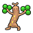
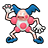

Access to:
North: Floccesy Ranch
West: Floccesy Town
East: Virbank City
Accessible on the route: Cave of Being
Utility:
Surf is required to access a Heart Scale, a Max Revive, a Rare Candy, a Big Mushroom, a Sticky Barb, several Trainers, and the Cave of Being. Wild Pokémon can also be encountered here with Surf.
Waterfall is required to access a Big Mushroom, a Sticky Barb, Pokémon Ranger Naoko, and the Cave of Being.
Funfest Missions:
Road map with 15 spots.
Funfest Trainers here are 1 level lower in Easy Mode and 1 higher in Challenge Mode.
During a swarm, the player has a 40% chance of encountering the swarming Pokémon, and a 60% chance that their encounter is taken from the normal encounter table.
| Pokémon | Games | Level | ||
|---|---|---|---|---|
|
 |
Sudowoodo | B2 | W2 | lv. 40-55 |
|
 |
Mr. Mime | B2 | W2 | lv. 40-55 |
| Item | Location | Notes |
|---|---|---|
| Parlyz Heal | North of Lass Isabel | |
| Poké Ball | On a rock northwest of Hiker Jerome | Hidden. |
| Poké Ball | North of Youngster Terrell | Only accessible in the autumn (March, July, and November). |
| Pecha Berry (3x) | Obtained from Cheren | |
| Great Ball | In the dark grass patch | |
| Antidote | Northeast of Preschooler Lin | |
| Dire Hit | East of Nursery Aide Kimya | |
| Heart Scale | In the eastern area | Hidden. Requires Surf. |
| Max Revive | Near Pokémon Ranger Leaf | Requires Surf. Only accessible in the autumn (March, July, and November). |
| Rare Candy | Near Pokémon Ranger Leaf | Requires Surf. Only accessible in the autumn (March, July, and November). |
| Big Mushroom | In the western part of the ledge near the bridge | Hidden. Requires Surf and Waterfall. |
| Sticky Barb | South of the bridge | Requires Surf and Waterfall. Only accessible in the autumn (March, July, and November). |
| Trainer | Party | Notes |
|---|---|---|
| Youngster Terrell | Patrat lv. 3 (Easy Mode) / 4 (Normal Mode) / 5 (Challenge Mode) | |
| Youngster Petey | Patrat lv. 3 (Easy Mode) / 4 (Normal Mode) / 5 (Challenge Mode) | |
| Lass Isabel | Purrloin lv. 3 (Easy Mode) / 4 (Normal Mode) / 5 (Challenge Mode) | |
| Hiker Jerome | Riolu lv. 10 (Easy Mode) / 11 (Normal Mode) / 12 (Challenge Mode) | Only after defeating Cheren. |
| Preschooler Albert | Psyduck lv. 9 (Easy Mode) / 10 (Normal Mode) / 11 (Challenge Mode) | Only after defeating Cheren. |
| Preschooler Lin | Lillipup lv. 9 (Easy Mode) / 10 (Normal Mode) / 11 (Challenge Mode) | Only after defeating Cheren. |
| Twins Lia & Lily | Sunkern lv. 8 (Easy Mode) / 9 (Normal Mode) / 10 (Challenge Mode) Sunkern lv. 8 (Easy Mode) / 9 (Normal Mode) / 10 (Challenge Mode) |
Only after defeating Cheren. This is a Double Battle. |
| Nursery Aide Kimya | Dunsparce lv. 10 (Easy Mode) / 11 (Normal Mode) / 12 (Challenge Mode) | Only after defeating Cheren. |
| Team Plasma Grunt | Purrloin lv. 13 (Easy Mode) / 14 (Normal Mode) / 15 (Challenge Mode) | Only after defeating Team Plasma in Virbank City. |
| Pokémon Ranger Leaf | Deerling lv. 31 (Easy Mode) / 32 (Normal Mode) / 33 (Challenge Mode) Scolipede lv. 31 (Easy Mode) / 32 (Normal Mode) / 33 (Challenge Mode) |
Requires Surf. Only accessible in the autumn (March, July, and November). He will give the player a Sitrus Berry after the battle. |
| Pokémon Ranger Malory | Arcanine lv. 32 (Easy Mode) / 33 (Normal Mode) / 34 (Challenge Mode) | Requires Surf. Only accessible in the autumn (March, July, and November). She will give the player a Leppa Berry after the battle. |
| Pokémon Ranger Bret | Stoutland lv. 32 (Easy Mode) / 33 (Normal Mode) / 34 (Challenge Mode) | Requires Surf. Only accessible in the autumn (March, July, and November). He will give the player a Leppa Berry after the battle. |
| Pokémon Ranger Naoko | Foongus lv. 31 (Easy Mode) / 32 (Normal Mode) / 33 (Challenge Mode) Leavanny lv. 31 (Easy Mode) / 32 (Normal Mode) / 33 (Challenge Mode) |
Requires Surf and Waterfall. Only accessible in the autumn (March, July, and November). She will give the player a Sitrus Berry after the battle. |